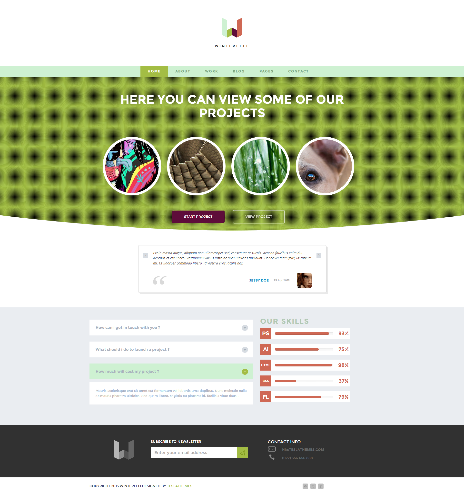

- Winterfell HTML Theme Documentation for version 1.0 by Theslathemes
Licensing Terms: Please be advised, in order to use the theme in a legal manner, you need to purchase a separate license for each domain you are going to use the theme on.
A single license is limited to a single domain/application.
Thank you for purchasing our product! We are very glad that you have decided on our HTML theme.
The theme is very easy to use and we are here to guide and help you, so please read and follow the instructions and if you have further questions write us a email hi@theslathemes.com. This documentation is more of a reference work if you do not know what to do and need a better understanding on how the template is built write us a email.
Winterfell has 16 HTML Files:
A screen of the Home Page:
The themes includes 4 javascripts:
This theme has been implemented as a responsive layout. The full width of the template is fluid for screen mode, 768px for tablet size screen, and for mobile 400px and the smallest one is 300px.
The CSS file is located in the css folder. The css file is registered and included in the "head"..."/head".
CSS file is very good structured and arranged so you can search very easy:
.works_portfolio .item figure figcaption{
position: absolute;
top: 0;
left: 0;
right: 0;
bottom: 0;
overflow: hidden;
-webkit-transition: all 0.5s cubic-bezier(.29,.78,.28,.97);;
-moz-transition: all 0.5s cubic-bezier(.29,.78,.28,.97);;
-ms-transition: all 0.5s cubic-bezier(.29,.78,.28,.97);;
-o-transition: all 0.5s cubic-bezier(.29,.78,.28,.97);;
transition: all 0.5s cubic-bezier(.29,.78,.28,.97);
}
.works_portfolio .item figure:hover{
border: 10px solid #d17f6f;
}
/* WORKS/PROJECTS 1 COLUMN STYLING BLOCK */
.works_portfolio .wrapper .single{
margin-bottom: 45px;
}
.works_portfolio .item .content .heading{
padding: 45px 0 50px 0;
font-size: 50px;
text-align: left;
}
.works_portfolio .item .content .article{
text-align: left;
}
/* PAGINATION STYLING BLOCK */
.pagination{
text-align: center;
}
.pagination .blog_nav{
text-align: left;
}
.pagination .nav_wrapper .nav .btn,
.posts_nav .pagination .nav_wrapper .nav .btn{
margin-right: 7px;
font-size: 11px;
font-weight: bold;
}
I've used the following images, icons, fonts or other files as listed.
Fonts used:
Thank you so much for choosing "Winterfell" we hope you will enjoy using it!